地政学
バンギは内陸国家の首都で、河港、官庁、空港、国境、国際支援の拠点が集まります。ウバンギ川の対岸にはコンゴ民主共和国があり、地域紛争、物流、外交、避難の動きが都市の日常に直結する重要な結節点にもなる街です。
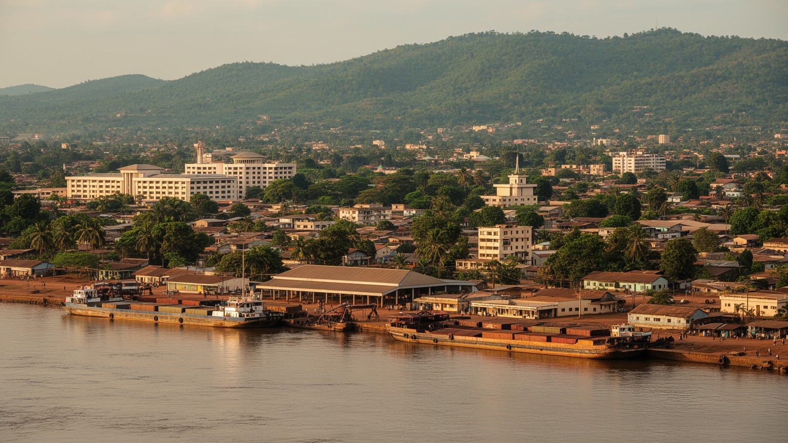
🇨🇫 中央アフリカ共和国 / バンギ県 / World City Atlas
ウバンギ川北岸に広がる中央アフリカ共和国の首都です。河港、国家行政、市場、信仰、援助、治安、国境物流、丘陵の住宅と生活インフラが近い距離で重なる内陸アフリカの都市です。
都市の骨格
バンギはウバンギ川をはさんでコンゴ民主共和国と向き合い、河港、官庁、市場、丘陵の住宅、援助機関、治安施設が密に集まります。内陸国の首都でありながら、川と道路が国境を越える生活線になります。
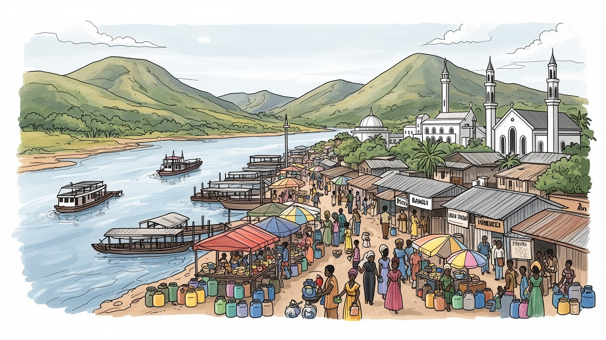
バンギは内陸国家の首都で、河港、官庁、空港、国境、国際支援の拠点が集まります。ウバンギ川の対岸にはコンゴ民主共和国があり、地域紛争、物流、外交、避難の動きが都市の日常に直結する重要な結節点にもなる街です。
行政、商業、河港、建設、交通、援助機関、小売、市場労働が都市経済を支えます。鉱物や木材の国ではありますが、首都の日々は露店、運転手、荷役、修理、家事、学校、医療の仕事で動きます。雇用の脆さも大きな課題でもあります。
サンゴ語とフランス語、教会、イスラム共同体、地域の信仰、音楽、舞踊、市場の食文化が都市の声を作ります。宗教施設は祈りだけでなく、教育、支援、避難、和解の場としても使われます。多民族の首都を支える基盤です。
旅行者はウバンギ川、ボガンダ博物館、市場、丘の眺望へ向かうが、住民は停電、断水、物価、治安、雇用、学校、医療と向き合います。首都の魅力は、危機の中でも日常を組み直す力と切り離せない都市の現実でもあります。
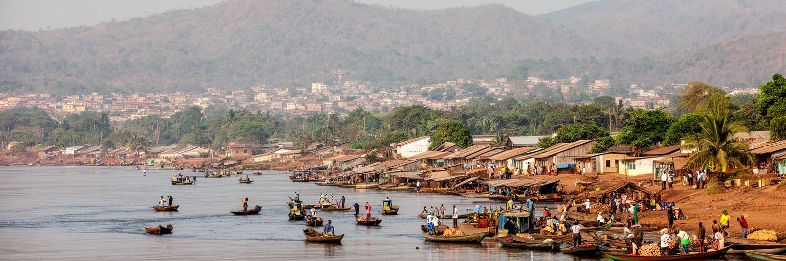
バンギの都市としての性格は、ウバンギ川の北岸にあることから始まります。川は中央アフリカ共和国とコンゴ民主共和国を分ける国境であり、同時に人、荷物、漁、言語、親族関係を結ぶ生活線でもあります。河港には物資、燃料、建材、食料、援助物資が集まり、市場や倉庫、道路へ流れます。乾季と雨季で水位や道路事情が変わるため、物流の安定は都市の物価に直結します。川沿いの低地、官庁街、市場、丘へ伸びる住宅地は短い距離で接し、洪水、衛生、交通、警備、土地利用の課題も重なります。内陸国の首都であるバンギにとって、川は海の代わりの窓であり、外部世界へ開く実用的な通路です。対岸の生活が近いからこそ、国境管理、難民、商人、漁民、家族の往来は抽象的な外交ではなく、日々の買物や仕事として現れます。バンギを読むには、首都の建物だけでなく、川辺の荷役、渡し、魚市場、雨上がりの泥道を見る必要があります。水面は都市を分ける線であると同時に、国家の弱さを補う柔らかな接続でもあります。川が動けば都市が動き、川が不安定になれば家計も揺れます。水辺の管理は景観整備ではなく、税関、衛生、洪水対策、生活交通を一体で扱う都市政策です。船着き場の小さな混乱も、店先の価格や学校へ向かう朝の移動に響いていきます。川の見え方は穏やかでも、そこには首都の制度と暮らしの弱点が集まっています。
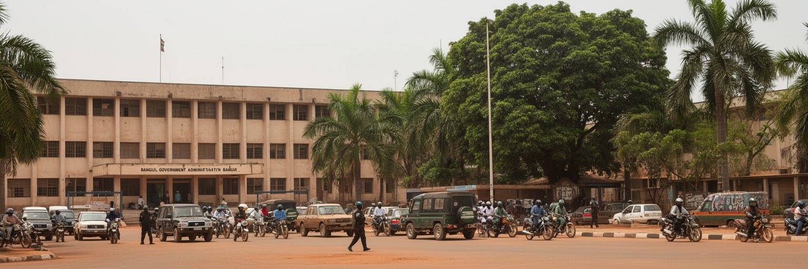
バンギは、人口規模だけでなく国家機能の集中によって重要になる都市です。大統領府、議会、官庁、裁判、外交団、国際機関、大学、主要病院、金融、報道、空港、河港が集まり、地方の行政や援助事業も首都の判断に左右されやすいです。中央アフリカ共和国は広い国土に道路と公共サービスが薄く、治安の不安定な地域も多いです。そのため、バンギの行政能力は国全体の統治能力として見られます。首都で手続きが止まれば、地方の学校、保健、給与、選挙、物資配分まで滞ります。逆に首都への集中は、地方の不満や周縁化を強めることもあります。バンギを首都として読むには、官庁の建物だけでなく、地方から来る人がどれだけ安全に手続きを済ませられるか、書類や賃金や医薬品がどこで詰まるかを見る必要があります。国家の顔である都市は、国民の生活に近い窓口でもあります。行政の信頼は、大きな演説よりも、窓口が開く時間、学校への予算、道路の通行、病院の薬、司法へのアクセスで測られます。首都を強くすることは、地方を従属させることではなく、広い国土へ制度を届ける起点を整えることです。行政の集中を緩めるには、地方都市の機能を育てつつ、首都の窓口を透明にする必要があります。バンギの安定は、遠い州の住民が国家を信じられるかにも関わっています。首都の書類一枚が、地方の給与や学校運営を左右することもあります。
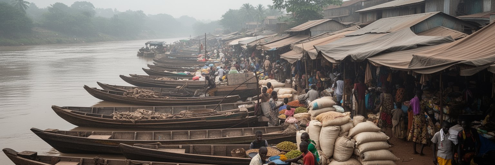
バンギの経済は、河港、道路、空港、市場が細く結ばれた回路で動きます。国内の木材、農産物、家畜、薪炭、手工業品が首都へ入り、輸入品や援助物資、燃料、医薬品、建材、日用品が地方へ向かいます。港や市場では、荷役、運転手、露店商、卸売商、倉庫作業員、通関、修理工、食堂、警備が連なり、公式統計に見えにくい仕事が生活を支えます。国境や幹線道路の不安定さ、燃料不足、為替、雨季の道路悪化は、米、油、石けん、薬、交通費の値段へすぐ影響します。市場は活気ある都市景観である前に、信用、掛け売り、親族、宗教行事、女性商人の技能が働く場所です。バンギの商業を理解するには、鉱物資源の輸出だけでなく、毎朝どの道を通って野菜が来るか、どの倉庫に燃料が届くか、どの露店が近所の食卓を支えるかを見る必要があります。港と市場が止まれば首都の家計はすぐ苦しくなります。逆に、小さな取引が安全に続けば、都市は危機の中でも息をつなぎます。河港と市場は、国家経済の末端ではなく、暮らしの予測可能性を作る中心です。雨の後のぬかるみ、日陰の不足、保管場所の狭さも、経済政策の課題になります。市場を整えることは商人を追い払うことではなく、保管、衛生、通路、照明を整え、取引を壊さずに安全を高めることです。小さな売買の継続が首都の回復力を作ります。そこに首都経済の実像があります。
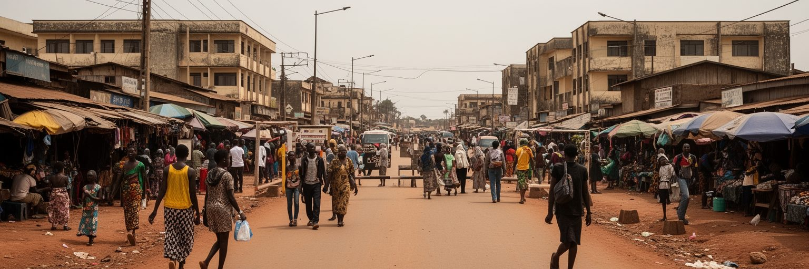
バンギは、中央アフリカ共和国の紛争と和平の影響を強く受けてきた首都です。武装勢力、政変、宗派間の緊張、国際部隊、避難民、治安部門改革、選挙の不安は、都市の道路、地区、学校、市場、宗教施設に具体的な形で現れます。治安は軍や警察だけで測れません。住民が夜に帰宅できるか、商人が同じ道を使えるか、子どもが学校へ行けるか、病院へ行く車が止められないかが、都市の安全を示します。危機の時には、教会、モスク、親族、地区の指導者、国際機関が避難と交渉の場になりますが、それは国家制度の弱さも映しています。バンギを紛争の首都としてだけ見ると、住民が毎日続けている調整と我慢を見落とします。安全の回復は、検問を増やすことだけではなく、裁判、雇用、若者の進路、公共サービス、和解、情報の信頼を積み直すことです。市場の通路が開き、学校が続き、宗教施設が互いに攻撃されない状態が、都市の公共性を回復させます。首都が落ち着くことは国全体の安定の条件ですが、首都だけの平穏では十分ではありません。地方との道路と信頼が戻って初めて、バンギの安定は孤立した島ではなくなります。住民が恐怖を避けて選ぶ迂回路や早い閉店時間も、統治の状態を示す指標です。公共空間を取り戻すには、治安と同じくらい生活サービスの復旧が必要になります。安全は生活を再開できる時間の長さとして測られます。
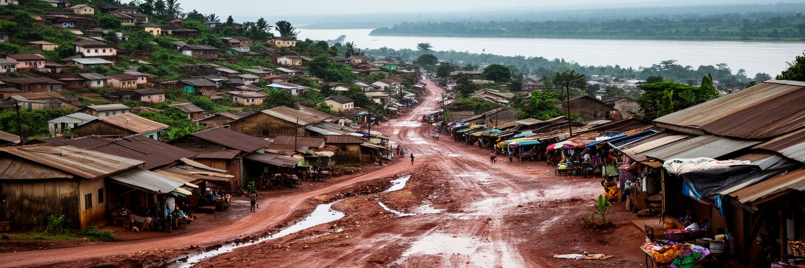
バンギの都市形態は、川沿いの低地、行政と商業の中心、空港へ向かう軸、丘陵地、周辺コミューンへ伸びる市街地で構成されます。中心部には官庁、広場、市場、商店、交通の結節点が集まり、周縁には未舗装道路、排水不足、断水、電力の不安定さを抱える住宅地が広がります。丘の上からは都市と川を見渡せるが、眺望は必ずしも安全な住環境を意味しません。雨季には道路が崩れ、排水路が詰まり、低地では冠水や衛生問題が起きます。住宅の多くは家族の手で少しずつ増築され、親族や同郷者の関係が地区の助け合いを作ります。行政境界よりも、通勤路、市場、学校、給水点、宗教施設への距離が暮らしの地図を決めます。バンギを歩くと、国家の首都でありながら、都市基盤が十分に整わない場所が近接していることが分かります。都市計画の課題は、中心部を飾ることより、道路、排水、街灯、土地台帳、廃棄物収集、公共交通を生活の密度に合わせて整えることにあります。地形とインフラの差は、災害時の危険と日常の出費を変えます。小さな橋や排水溝が使えるかどうかが、学校へ行ける日数や商売の売上を左右します。地区の改善は大規模事業だけで進みません。住民が使う路地、井戸、停留所、市場の入口を一つずつ直すことが、都市の公平性を広げる現実的な方法になります。都市の形は、生活の選択肢の差をそのまま映しています。
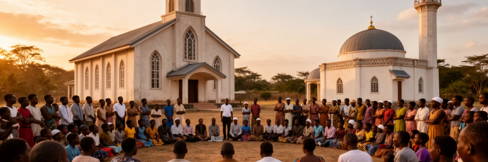
バンギの文化と社会を理解するには、信仰の役割を避けて通れありません。キリスト教の教会、イスラム共同体、地域の伝統的な信仰、家族の儀礼は、都市の生活リズムを作ります。礼拝は祈りであると同時に、学校、医療支援、食料配布、避難、葬儀、結婚、若者の相談、地域の情報交換を支える制度でもあります。紛争期には宗教的な境界が緊張を生んだ一方で、宗教指導者や地域組織が対話と保護に関わる場面もありました。信仰を単純に対立の原因として見ると、住民が危機の中で頼った支えを見落とします。サンゴ語とフランス語、賛美歌、祈り、説教、市場の挨拶、ラジオの声は、都市の共同性を日々作り直しています。バンギの和解は、国際会議の文書だけでなく、同じ市場を使い、隣人の葬儀に行き、子どもを同じ学校へ通わせる小さな実践に現れます。宗教施設は公共サービスが弱い時ほど、住民が集まれる数少ない安全な空間になります。だからこそ、信仰の場を政治的に利用せず、相互扶助と対話の基盤として守ることが重要です。祈りの場に残る記憶は、傷を忘れるためではなく、同じ都市に住み続ける方法を探すためにあります。和解は静かな日常の反復でもあります。宗教施設の周囲には、学校、診療、食料支援、小さな商いが集まりやすいです。そこに戻れるかどうかは、地区の信頼がどこまで回復したかを示しています。都市の絆を測る場でもあります。
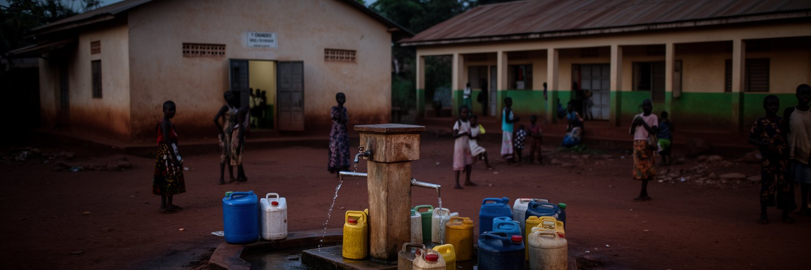
バンギの日常を左右する最も基本的な条件は、水、電気、道路、医療、学校です。給水が不安定な地区では、井戸、公共水栓、給水車、貯水容器に頼り、水を得る時間が家事、通学、仕事を圧迫します。停電が続けば、冷蔵、通信、夜の勉強、診療所の機器、小さな商店の営業が難しくなります。未舗装道路や排水の弱さは、雨季に移動を遅らせ、救急や商品の配送にも影響します。公共サービスが不足すると、家族、近所、宗教団体、援助機関、民間の小さな事業者が穴を埋めるが、その費用は低所得世帯ほど重いです。バンギの貧困は収入だけでなく、基本サービスへたどり着く時間と不確実性として現れます。首都であることは、必ずしも十分な都市サービスを意味しません。水道、電力、学校、保健、廃棄物収集を安定させることは、目立つ開発事業より地味ですが、都市の尊厳を支えます。住民が一日の予定を立てられるかどうかは、制度への信頼そのものです。インフラが安定すれば、商人は在庫を持ち、子どもは宿題をし、診療所は薬を保管できます。小さな日常の安定が、首都の回復力を形づくります。生活インフラは政治の結果であり、同時に平和の基礎でもあります。水を待つ列や充電できる店の前の人だかりは、都市の不足を可視化します。改善は大型施設だけでなく、地区ごとの配管、街灯、保守の仕組みにかかっています。続ける力が要ります。
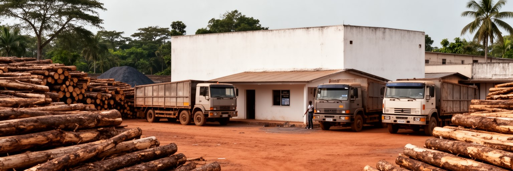
中央アフリカ共和国は、金、ダイヤモンド、木材、農地、水資源を持つ国として語られることが多いです。しかし資源の存在は、首都住民の豊かさを自動的に保証しません。採掘地や伐採地は地方に広がり、道路、治安、許認可、輸出管理、税収、汚職、武装勢力、国際規制が複雑に絡みます。バンギには、資源取引に関わる行政、商人、輸送、金融、監督、国際機関が集まりますが、実際の利益が学校、病院、道路、電力へ十分戻るかは別問題です。違法取引や不透明な契約は国家歳入を弱め、紛争の資金源にもなりうります。木材や鉱物は倉庫や書類の上では首都に現れるが、都市の市場で働く人々には、物価高や公共サービス不足としてしか見えないことも多いです。バンギを資源国の首都として読むには、富がどこで掘られ、誰が運び、誰が許可し、誰が税を受け取り、誰の生活に戻らないのかを追う必要があります。資源は地図上の点ではなく、統治の質を試す回路です。透明な管理と地域への還元がなければ、首都の官庁は豊かさの窓口ではなく、不信の窓口になってしまいます。資源の価値を都市の公共サービスへ変える力が、国の将来を左右します。首都の道路や学校に資源収入が見えない時、人々は国家の説明を信じにくくなります。資源を生活へ変換する制度こそ、バンギで最も問われる経済の課題です。富の出口は公共サービスでなければなりません。
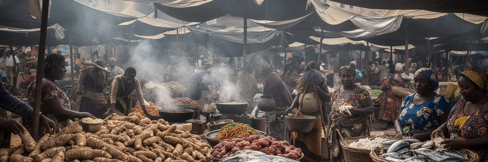
バンギの食は、キャッサバ、米、プランテン、落花生、魚、肉、葉野菜、唐辛子、屋台の料理、家庭の煮込みによって作られます。市場では、地方から来た農産物、川の魚、輸入米、油、石けん、炭、衣料が並び、女性商人や若い荷運び、運転手、料理人、修理工が細かな収入を重ねます。食卓は文化であると同時に物流と労働の結果です。道路が悪くなれば野菜は遅れ、燃料が不足すれば調理費が上がり、治安が不安定になれば商人は仕入れを減らします。家族は価格を見ながら献立を変え、近所の信用や掛け売りで日々をつなぎます。市場のにぎわいは都市の強さを示すが、衛生、日陰、保管、排水、交通整理、安全な通路がなければ、働く人の負担は重いです。バンギの食文化を読むには、味だけでなく、誰が早朝に仕入れ、誰が薪や炭を運び、誰が子どもを見ながら売るのかを見る必要があります。小さな商いは、首都の食料安全保障そのものです。市場を整える政策は、露店を消すことではなく、働く人が安心して売り、住民が手の届く価格で買える環境を作ることです。食卓の安定は、港、道路、女性の労働、家計の信用が結びついて初めて保たれます。食料価格が上がると、家庭は量を減らし、子どもの栄養や学習にも影響が及びます。だから市場労働を守ることは、福祉と教育を守ることでもあります。食の場は都市の健康を映します。
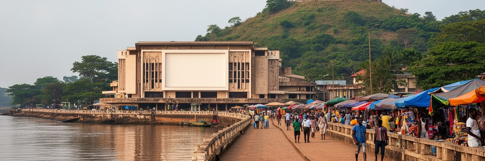
バンギの観光は大規模なリゾート型ではなく、ウバンギ川、ボガンダ博物館、市場、宗教施設、丘からの眺望、周辺の自然と結びつく静かな都市理解の旅になります。安全状況の確認は欠かせないが、首都には中央アフリカ共和国の歴史、独立、政治、宗教、生活文化を読む手がかりがあります。川辺を歩けば国境と物流が見え、市場では食と商業の厚みが見え、博物館や記念の場では国家を作ろうとした記憶が残ります。観光は住民の不安や貧困を眺める行為であってはなりません。地元ガイド、適切な移動、地域の店への支出、宗教施設への敬意、写真への配慮が必要です。バンギの遺産は、建物の保存状態だけで評価できません。紛争や行政の弱さの中でも、言語、音楽、食、家族の記憶、川との関係が都市の文化を保っています。観光が戻るためには、安全、交通、宿泊、博物館、歩行環境、地域収入が同時に整う必要があります。小さな名所を丁寧に使うことは、都市の記憶を守り、住民が自分の街を語る機会を増やします。訪問者にとってバンギは、内陸アフリカの首都がどのように国家、国境、生活を背負うかを学ぶ場所です。短い滞在でも、川と市場と丘を結んで歩けば、都市の層が見えてきます。観光の再生は、外から来る人のためだけではありません。博物館、広場、川辺を住民が使い続けられることが、都市の記憶を次の世代へ渡す力になります。
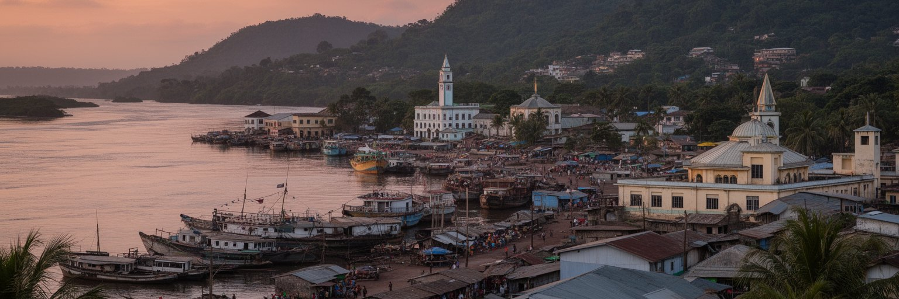
バンギは、紛争や貧困のニュースだけで語られやすい都市です。しかし実際には、国境の川、河港、官庁、市場、信仰、援助、学校、病院、丘陵の住宅が重なり、中央アフリカ共和国の国家と生活を同時に背負っています。首都の道路が動くかどうかは、地方とのつながり、輸入品の価格、行政の信頼、住民の安全に直結します。市場の女性商人、川の荷役、教会やモスクの支援、学校の教師、診療所の職員、運転手、若者の小さな仕事は、脆い制度の間で都市を支えます。バンギを読むことは、失敗した国家の象徴を眺めることではありません。広い国土、資源、紛争、国境、援助、都市化、家族の努力が、どのように一つの首都に集まるかを理解することです。ウバンギ川は境界であり通路であり、官庁は権力の場所であり生活の窓口であり、市場は貧困の現場であり回復力の場所でもあります。バンギの重要性は、都市が大きいからだけではなく、国の制度が住民の日常に届くかどうかを最も鋭く見せるからです。水、電気、道路、安全、学校、市場を少しずつ安定させることが、首都を国家の重荷から生活の基盤へ変えていきます。川辺の都市を丁寧に見ることは、内陸アフリカの政治と暮らしを同じ地図で読む手がかりになります。外部支援や資源収入が本当に役立つかは、バンギの地区で水が出るか、学校が開くか、市場へ安全に行けるかに表れます。大きな制度の成否は、首都の小さな日常で試されています。